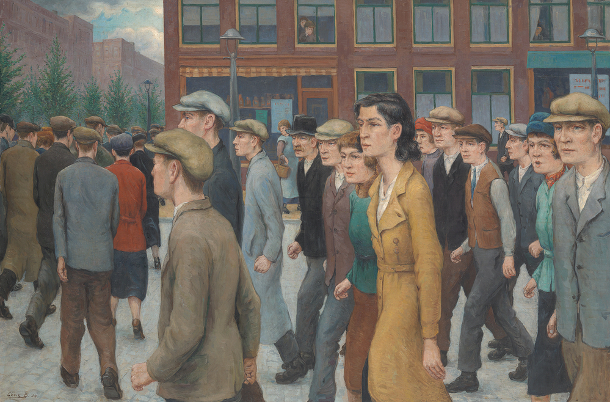

De waarheid over vroeger! Lekker gegooid, bro! Maar wist je dat dit vroeger echt levensgevaarlijk was? Demonstreren was toen streng verboden. Als mensen toch met spullen gooiden, stuurde de overheid meteen het leger. Soldaten sloegen het protest keihard neer en er vielen vaak doden. Pas sinds 1983 is demonstreren een recht in Nederland. Nu mag je vreedzaam je mening geven zonder dat het leger komt, man!